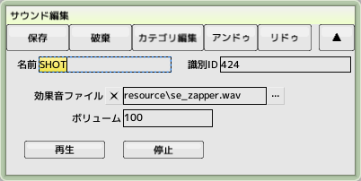
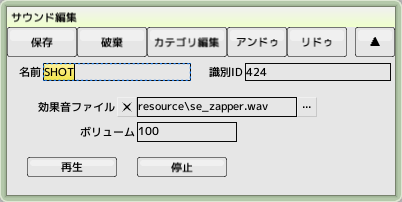

back to the original page
back to the original page
15.Setting the sound
Create sound effects and background music to be incorporated into the game
 

Create a new sound from the project
Create a 'BOMB' for the explosion sound and a 'SHOT' for the shot sound of your plane
Register the 'resource/se_bomb.wav' and 'resource/se_zapper.wav' in the tutorial folder
Register 'BOMB' to the default explosion sound in the Default Specifications tab of the game settings
Sets the sound effect when the player fires the shot

Create a new background music from the project
Create 'STAGE1' to play as background music for Stage 1
Register 'resource/bgm_stage1.ogg' in the tutorial folder
 Open the previously created stage 'STAGE1'
Open the previously created stage 'STAGE1'
Set the main BGM item
BGM playback will begin automatically at the start of the stage
 Playback of sound effects and change of the main BGM is also possible from the script
Playback of sound effects and change of the main BGM is also possible from the script
Back to top of page